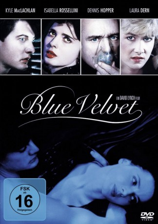

#2191 Blue Velvet - Verbotene Blicke
Alternativ: Blue Velvet
Auszeichnungen: für 1 Oscars nominiert
 
 IMDB-Wertung: 7.8 / 10
IMDB-Wertung: 7.8 / 10  Metascore: 76
Metascore: 76 
Jeffrey findet ein abgeschnittenes Ohr - ein alptraumhafter Trip in die Welt von Sex, Gewalt und Sado-Maso beginnt. Auf der Suche nach einem vermeintlichen Verbrecher dringt er heimlich in die Wohnung der erotischen Nachtclub-Sängerin Dorothy ein. Entsetzt wird er Zeuge einer Vergewaltigung und findet heraus, dass sie von dem perversen Lüstling erpresst wird, der ihren Mann und ihr Kind als Geiseln genommen hat. Zusammen mit der Tochter des Sheriffs, die ihn mit Tipps versorgt, gerät Jeffrey in einen Teufelskreis von Perversionen, in den auch die örtliche Polizei und eine Rauschgiftbande verstrickt ist. Als Jeffrey entdeckt wird, ist es zu spät um auszusteigen. Aus seinem Detektivspiel wird ein Kampf um Leben und Tod...
Jahr: 1986
Dauer: 120 Minuten
FSK: 16
Land: USA Studio: DEGTonspuren: DTS - ,
Untertitel: Deutsch,
Auflösung: 1080p (1920x816) Größe: 7424 MB
Genre: Thriller, Drama, Krimi, Mystery
Regisseur:  David Lynch
David Lynch
Drehbuch: David Lynch
Soundtrack: Angelo Badalamenti
Darsteller:
 Isabella Rossellini als Dorothy Vallens
Isabella Rossellini als Dorothy Vallens Kyle MacLachlan als Jeffrey Beaumont
Kyle MacLachlan als Jeffrey Beaumont Dennis Hopper als Frank Booth
Dennis Hopper als Frank Booth Laura Dern als Sandy Williams
Laura Dern als Sandy Williams Hope Lange als Mrs. Williams
Hope Lange als Mrs. Williams Dean Stockwell als Ben
Dean Stockwell als Ben- Priscilla Pointer als Mrs. Beaumont
 Frances Bay als Aunt Barbara
Frances Bay als Aunt Barbara Brad Dourif als Raymond
Brad Dourif als Raymond Jack Nance als Paul
Jack Nance als Paul- Selden Smith als Nurse Cindy
- Angelo Badalamenti als Piano Player
- George Dickerson als Detective John Williams
- Jack Harvey als Tom Beaumont
- Ken Stovitz als Mike
- J. Michael Hunter als Hunter
- Dick Green als Don Vallens
- Fred Pickler als Yellow Man
- Philip Markert als Dr. Gynde
- Leonard Watkins als Double Ed
- Moses Gibson als Double Ed
- Peter Carew als Coroner
- Jon Jon Snipes als Little Donny
- Jean Pierre Viale als Master of Ceremonies
- Donald Moore als Desk Sergeant
- A. Michelle Depland als Party Girl
- Michelle Sasser als Party Girl
- Katie Reid als Party Girl
- Sparky als The Dog
Datei: X:\1986\Blue Velvet - Verbotene Blicke (1986, FSK16, 1920x816).mkv seit 19.10.2015
Festplatte: HD 1980-1986
 Es gibt insgesamt 50 Filme in der Gruppe '1986'
Es gibt insgesamt 50 Filme in der Gruppe '1986'